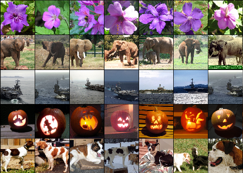

Multi-column deep neural networks for image classification

| Architecture Type | Deep Convolutional Neural Network (CNN) |
|---|---|
| Key Innovation | Non-saturating ReLU activations and Dropout regularization |
| Performance Metric | 15.3% top-5 error on ILSVRC-2012 |
| Computational Efficiency | Parallelized across two NVIDIA GTX 580 GPUs over 6 days |
| Venue | 2012 IEEE Conference on Computer Vision and Pattern Recognition |
| Year | 2012 |
| Citations | 4038 |
| DOI | Link |
ImageNet Classification with Deep Convolutional Neural Networks, commonly known as AlexNet, is a seminal work that triggered the deep learning revolution in computer vision. Introduced by Alex Krizhevsky, Ilya Sutskever, and Geoffrey Hinton, the model achieved a record-breaking 15.3% top-5 error rate in the ILSVRC-2012 competition, outperforming the runner-up by over 10 percentage points. It demonstrated that large, deep convolutional neural networks (CNNs) could be efficiently trained on GPUs using techniques like ReLU activations and Dropout to handle massive datasets and mitigate overfitting.
Rectified Linear Units (ReLU) and Accelerated Training

The authors identify saturating nonlinearities, such as the hyperbolic tangent ($tanh(x)$) and the sigmoid function, as primary bottlenecks in training deep networks via gradient descent. To address this, they employ Rectified Linear Units (ReLUs), defined as $f(x) = max(0, x)$. ReLUs are non-saturating, meaning their derivatives do not vanish for positive inputs, which significantly accelerates the convergence of the stochastic gradient descent (SGD) process.
Empirical results in the paper demonstrate that a four-layer CNN with ReLUs reaches a 25% training error rate on the CIFAR-10 dataset six times faster than an equivalent network using tanh neurons. This acceleration was crucial for the feasibility of training the 60-million-parameter AlexNet architecture on the 1.2 million images of the ImageNet dataset. Figure 1 highlights this stark difference in learning dynamics, showing that faster learning is essential for fitting large models to massive datasets within reasonable timeframes.
Cross-GPU Parallelization and Distributed Architecture

Due to the memory constraints of the hardware available at the time—specifically the 3GB limit of the NVIDIA GTX 580—the authors developed a sophisticated parallelization scheme to split the network across two GPUs. The 60 million parameters and 650,000 neurons are distributed such that half of the kernels (or neurons) reside on each GPU.
A key architectural innovation is the restricted connectivity between these GPUs: communication only occurs at specific layers. For instance, the third convolutional layer takes input from all kernel maps in the second layer, but the fourth convolutional layer only takes input from maps residing on the same GPU. This 'columnar' approach, as illustrated in Figure 2, allows for a precise balance between computational throughput and inter-GPU communication overhead. This distributed setup reduced the top-1 and top-5 error rates by 1.7% and 1.2%, respectively, compared to a single-GPU model with half as many kernels.
Local Response Normalization and Overlapping Pooling
While ReLUs do not require input normalization to prevent saturation, the authors introduced a 'Local Response Normalization' (LRN) scheme to aid generalization. Inspired by lateral inhibition in biological neurons, LRN creates competition for high activities among neuron outputs computed using different kernels at the same spatial position. This scheme implements a form of brightness normalization that reduced the top-1 error rate by 1.4%.
Additionally, the architecture utilizes overlapping pooling to summarize the outputs of neighboring groups of neurons. Unlike traditional pooling where the stride equals the window size (e.g., $s=2, z=2$), AlexNet uses a stride of $s=2$ with a window size of $z=3$. The authors noted that this overlapping scheme makes the model slightly more difficult to overfit during training and reduced the top-5 error rate by 0.3% compared to non-overlapping pooling of equivalent output dimensions.
Regularization Strategies: Dropout and Data Augmentation
To combat substantial overfitting in the 60-million-parameter model, the authors employed two primary forms of data augmentation and a novel regularization technique called 'Dropout'. Data augmentation involved generating image translations, horizontal reflections, and performing PCA-based color augmentation on RGB channels. This artificially enlarged the training set by a factor of 2048, allowing the network to learn translation and illumination invariance.
Dropout, applied to the first two fully-connected layers, consists of setting the output of each hidden neuron to zero with a probability of 0.5. This prevents 'co-adaptation' of neurons, forcing them to learn more robust features that are useful in conjunction with random subsets of other neurons. At test time, all neurons are used, but their outputs are scaled by 0.5 to approximate the geometric mean of the predictive distributions. While Dropout doubled the number of iterations required for convergence, it was indispensable for preventing the network from memorizing the training data.
Concept Breakdown
The fraction of test images for which the correct label is not among the five labels considered most probable by the model.
A biological process where an excited neuron reduces the activity of its neighbors, implemented in AlexNet via Local Response Normalization.
An optimization algorithm that updates weights using the gradient of the loss function, enhanced by a momentum term to accelerate learning and dampen oscillations.
Activation functions like sigmoid or tanh that flatten out (saturate) at extreme values, causing gradients to become near-zero and slowing down training.
Mathematics
Rectified Linear Unit (ReLU)
| Symbol | Meaning |
|---|---|
| $x$ | The weighted sum of inputs to the neuron |
| $f(x)$ | The activated output of the neuron |
Local Response Normalization
| Symbol | Meaning |
|---|---|
| $a^i_{x,y}$ | Original activity of neuron from kernel i at position (x,y) |
| $b^i_{x,y}$ | Normalized response |
| $n$ | The number of adjacent kernel maps to consider in the sum |
| $k, \alpha, \beta$ | Hyper-parameters (constants) determined via validation |
Weight Update with Momentum
| Symbol | Meaning |
|---|---|
| $v_i$ | The momentum variable at iteration i |
| $w_i$ | The weight value at iteration i |
| $L$ | The objective (loss) function |
| $\epsilon$ | The learning rate |
Figures and Explanations
Comparison of training speeds between ReLU and tanh units. The solid line (ReLU) reaches a 25% error rate on CIFAR-10 six times faster than the dashed line (tanh), illustrating the efficiency of non-saturating neurons.
The detailed 8-layer architecture of AlexNet. It shows the split between two GPUs, with the first layer using 96 kernels of 11x11, and subsequent layers connected in a specific GPU-restricted pattern.
See Also
References
- Traffic sign recognition with multi-scale Convolutional Networks - P. Sermanet, Yann LeCun (2011)
- The German Traffic Sign Recognition Benchmark: A multi-class classification competition - J. Stallkamp, Marc Schlipsing et al. (2011)
- Convolutional Neural Network Committees for Handwritten Character Classification - D. Ciresan, U. Meier et al. (2011)
- Flexible, High Performance Convolutional Neural Networks for Image Classification - D. Ciresan, U. Meier et al. (2011)
- The Importance of Encoding Versus Training with Sparse Coding and Vector Quantization - A. Coates, A. Ng (2011)
- Chinese Handwriting Recognition Contest 2010 - Chenglin Liu, Fei Yin et al. (2010)
- Evaluation of Pooling Operations in Convolutional Architectures for Object Recognition - Dominik Scherer, Andreas C. Müller et al. (2010)
- Deep, Big, Simple Neural Nets for Handwritten Digit Recognition - D. Ciresan, U. Meier et al. (2010)
- Why Does Unsupervised Pre-training Help Deep Learning? - D. Erhan, Aaron C. Courville et al. (2010)
- Performance and Scalability of GPU-Based Convolutional Neural Networks - Daniel Strigl, Klaus Kofler et al. (2010)
- Large-scale object recognition with CUDA-accelerated hierarchical neural networks - Rafael Uetz, Sven Behnke (2009)
- Overfitting in the selection of classifier ensembles: a comparative study between PSO and GA - E. Santos, Luiz Oliveira et al. (2008)
- Unsupervised Learning of Invariant Feature Hierarchies with Applications to Object Recognition - Marc'Aurelio Ranzato, F. Huang et al. (2007)
- Learning a Nonlinear Embedding by Preserving Class Neighbourhood Structure - R. Salakhutdinov, Geoffrey E. Hinton (2007)
- Robust Object Recognition with Cortex-Like Mechanisms - Thomas Serre, Lior Wolf et al. (2007)
- Greedy Layer-Wise Training of Deep Networks - Yoshua Bengio, Pascal Lamblin et al. (2006)
- Efficient Learning of Sparse Representations with an Energy-Based Model - Marc'Aurelio Ranzato, Christopher S. Poultney et al. (2006)
- An implicit segmentation-based method for recognition of handwritten strings of characters - P. Cavalin, A. Britto et al. (2006)
- Parallel, distributed and network-based processing - P. Cremonesi (2006)
- Estimating accurate multi-class probabilities with support vector machines - Jonathan Milgram, M. Cheriet et al. (2005)